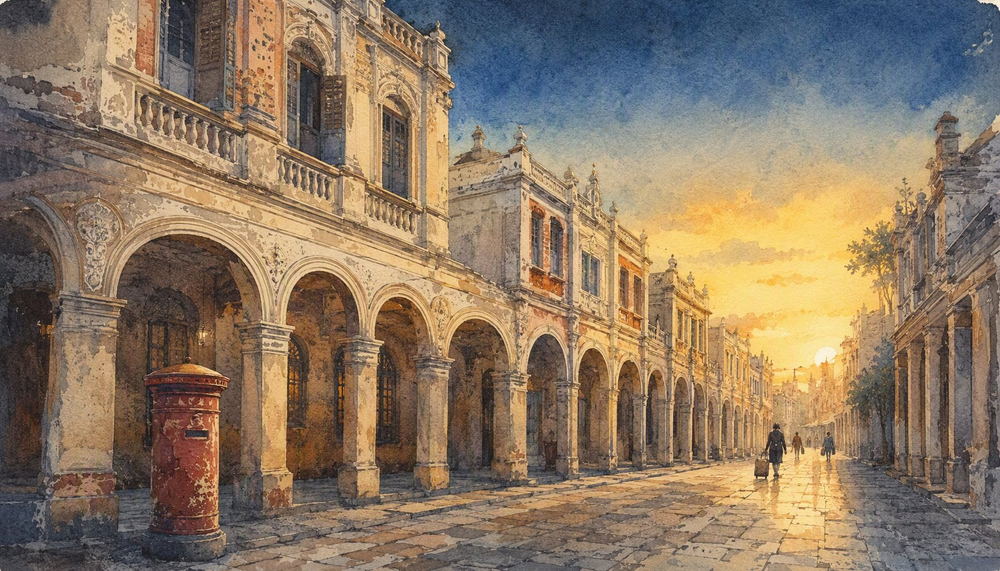
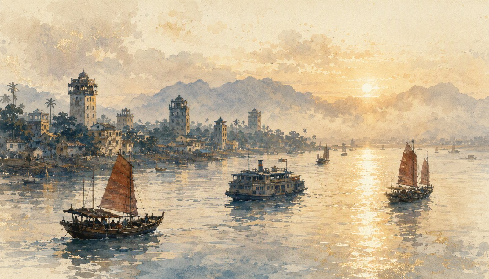
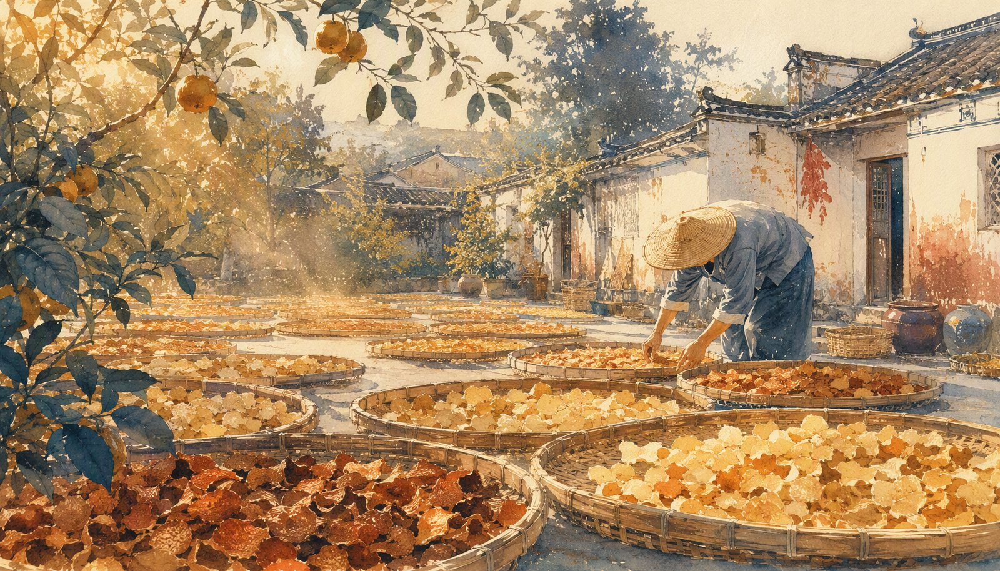
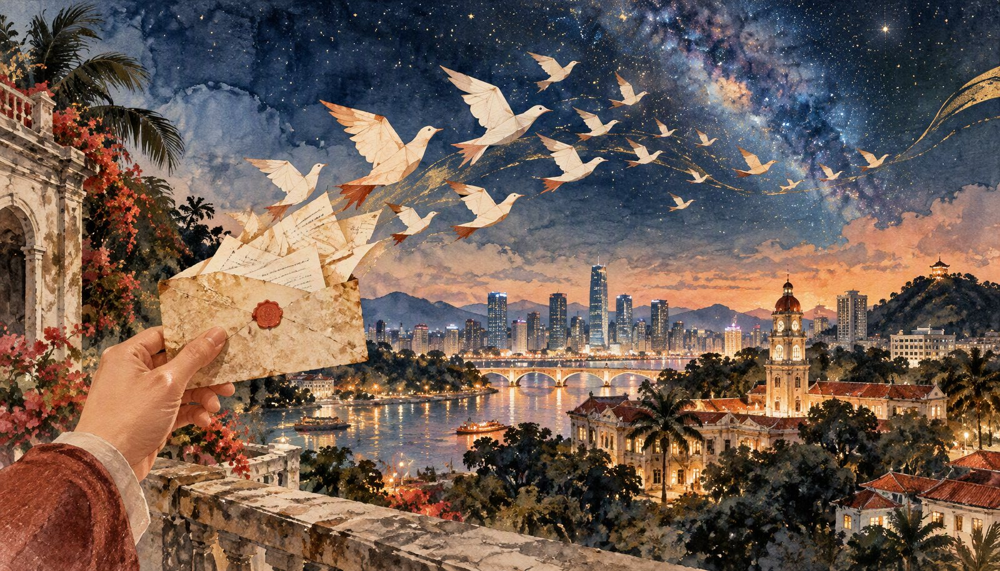

五帧画面，读一座"中国侨都"的山海与人间




一城山水 · 十二处风物
转一转，看看骑楼后的江河；点一处，走近心里的江门
正在准备沙盘…
每一封信都藏着一段话 · 点击撕开
四类题材，四条独立的寻美路线
漂洋过海，把异乡活成故乡，把故乡记了一辈子。
一门手艺，一生坚守，薪火在指缝间越烧越旺。
于细微处见功夫，把平凡的日子打磨成作品。
一盏灯点亮另一盏灯，精神就这样传了下去。
读完十二封信，去点亮一盏灯 →
人物之外，还有 28 味吃食、46 处风景 · 测一测乡土知识，排一段自己的旅程